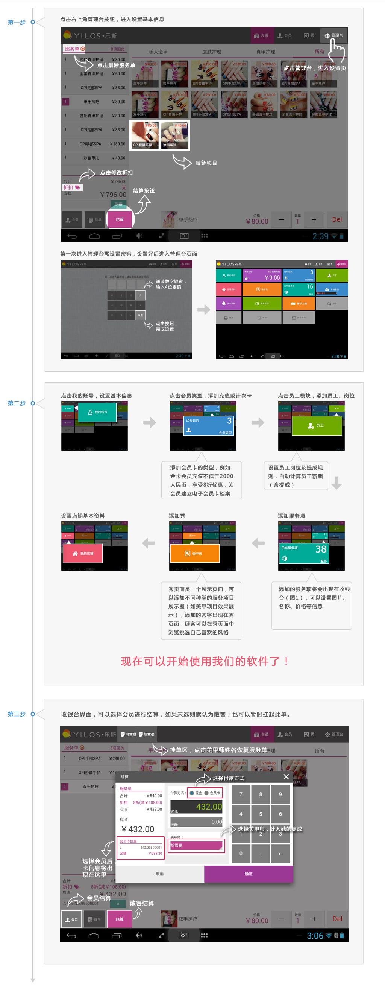

<div id="m-setting-newGuide-area" class="featureSpace">
    <style>
        #m-setting-newGuide-area {
            background: #ededed url("imgs/bg-line.png") center repeat;
        }

        .m-newGuide-content {
            overflow: auto;
            text-align: center;
        }

        .m-newGuide-content img {
            width: 100%;
            max-width: 1024px;
        }
    </style>
    <div class="m-setting-newGuide">
        <div class="m-setting-title">
            <ul>
                <li style="float: left;">
                    <a ng-tap="back_setting()">
                        
                    </a>
                    <span style="font-size: 1.4rem;">
                        <%= setting.newGuide.newGuide %>
                    </span>
                </li>
            </ul>
        </div>
        <div class="m-newGuide-content">
            
        </div>
    </div>
</div>